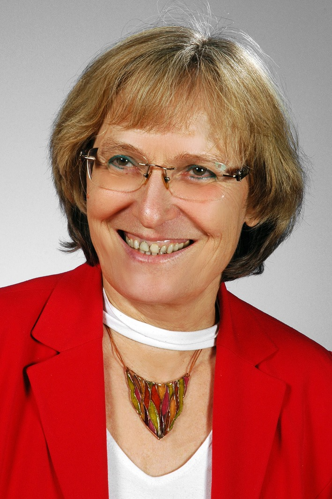

Barkos Bea
Pályámat bölcsészként, a magyar ősvallás kutatójaként kezdtem, majd a képzőművészetben találtam meg a gondolataim
kifejező formanyelvét. Elvégeztem a Kaposvári, majd a Szegedi Egyetem rajz, vizuális kommunikáció szakát
mesterképzésen is. A moszkvai egyetem művészetterápiás tanszékének külsős oktatója vagyok.
Mindeközben állandó alkotói és kiállítói tevékenységem kapcsán váltam ismertté.
Tanítom a tűzzománc technikát hazánkban és külföldön egyaránt.
A tűzzománc minden műfaját művelem. A sík- és domborított felületek megmunkálása egyaránt jellemzi
munkásságom.
Munkáimat bemutattam hazánkban és Európa több városában: Németországban, Ausztriában, Lengyelországban,
Olaszországban, Svájcban, Romániában, Szerbiában, Szlovákiában, Horvátországban, de munkáim a világ minden
földrészére eljutottak.
Kollektív kiállítások:
- 1998. Magyar Kultúra Napja, Szegedi Ifjúsági Ház
- 2003. Milánói kézműves vásár és szakkiállítás
- 2003-2005. Budapest- Iparművészeti Múzeum, Vigadó Galéria- Kézműves Alapítvány tárlata
- 2003-2005. Hódmezővásárhely, Tornyai Múzeum, Tavaszi Tárlat
- 2004. Trieszt, kézműves szakkiállítás
- Adi Art I. Nemzetközi Képzőművészeti Fórum Lodz, Lengyelország.
- IV. Nemzetközi Tokaji Képző-és Ipaművészeti Kiállítás Hódmezővásárhely, Tornyai Múzeum, Tavaszi Tárlat
- 2005. Basel- MUBA Hódmezővásárhely, Tavaszi Tárlat
- 2006. Hódmezővásárhely, Tavaszi Tárlat
- 2007. Gorizia, Olaszország, Városi Gléria
- 2008. Bartók Béla Művelődési Központ záró kiállítás
- 2009. Orosháza, Városház Galéria
- 2010. Balatonkenese, Kultúra Háza
- 2011. 8. Kortársművészeti Biennálé, Firenze
- 2012. Rovás Kortárs Képzőművészeti Csoport Baja, Eötvös József Műszaki Főiskola
- 2013. Pápa, Református Gimnázium
- 2014. MTA, Szegedi Biológiai Központ
- 2016. Budapest, SOTE Semmelweis Szalon
- 2017. Siófok, Kálmán Imre Emlékház
- 2019 Zenta, Ujvidék, Kikinda
Egyéni kiállítások:
- 1998. Rothenburg o.d T. Kunstkreis Galéria
- 2003. Szentes, Városi Galéria
- 2004. Rothenburg o.d T. Kunstkreis Galéria
- 2005. Gyergyócsomafalva, Borsos Miklós Emlékház; Románia, Gyergyószentmiklós, Művelődési Központ
Románia-Erdély
- 2006. Szegvár, Kastély; Nagybánya, Teleki Magyar Ház
- 2007. Marosvásárhely, Bernády Ház; Graz, Ganggalerie; Szeged, Bartók Béla Művelődési Központ „B” Galéria
- 2009. Orosháza, Képtár
- 2010. Szeged, Somogyi Könyvtár; Budapest, PrimArt Galéria; Veszprém Nyitott Műhely Egyesület, Németország,
Ulm, Magyar Kultúregyesület Szeged,Polgári Szalon.
- 2011. Budapest, Magyarok Háza Csontváry Terem Olaszország, Firenze, Magyar Egyesület Budapest, Unio Galéria
- 2012. Szegedi Egyetem, Őszi Kulturális Fesztivál TIK
- 2013. Pápa, Református Gimnázium
- 2014. Szeged, Grand Café- versfestés performance
- 2015. Domonkos István: Kormányeltörésben performance nyílt színi festés
- 2016. Kiskunfélegyháza, Petőfi Sándor Városi Könyvtár, Budapest, Semmelweis Szalon, SOTE Köztéri munkák:
Algyő, termálfürdő, Szent Borbála tűzzománc plasztika Kalkuttai Szent Teréz Templom Újszeged, négy
evangelista Díjak
- 2013, 2016, 2019, Szeged Város Alkotói díj
Művésztelepek:
- 1998-2008. Románia-Erdély, Makfalva
- 2003. Eger, tűzzománc alkotótelep Sisia József vezetésével
- 2006, 2008. Hajdúdorog tűzzománc alkotótelep Morelli Edit vezetésével
- 2008. Kecskemét, Nemzetközi Zománcművészeti Alkotótelep, Őszi szimpozium
- 2007-2008. Szálka Kaposvári Egyetem művésztelepe
- 2009. Eger, tűzzománc alkotótelep, Kátai Mihály vezetésével
- 2010. Hajdúdorog, Tűzzománc Alkotótelep, Balatonkenese
- 2012. Rovás Kortárs Képzőművészeti Csoport Kassa, Tihany
- 2013. Szentegyháza, Tihany, Bugac nemzetközi művésztelep
- 2014. Sövér Elek nemzetközi művésztelep Gyergyóalfalu
- 2015. Fiume, Horvátország, Szentegyháza Románia
- 2018. Bugac, Nemzetközi Művésztelep
- 2019. Rezi művésztelep